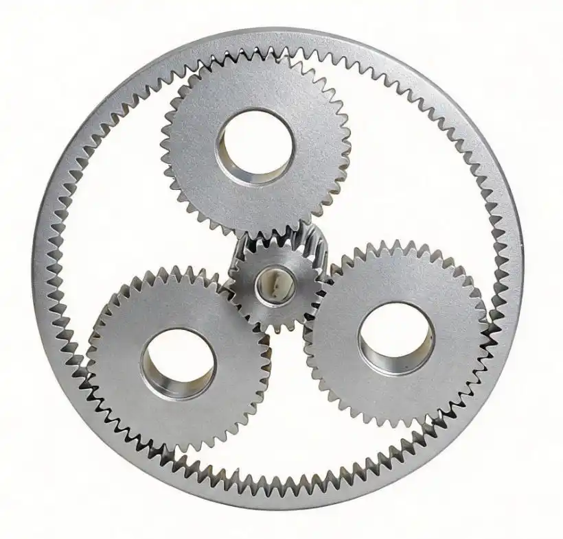

Complete Selection Guide for Precision Planetary Gear Reducers
Introduction
With over 15 years of experience manufacturing DIN5 & DIN6 precision planetary gears, we often receive inquiries from automation, robot and construction equipment engineers about improper gearbox selection that leads to premature gear breakage, vibration and positioning failure. This practical guide covers all core parameters & industry matching rules for your reference.

1. Core Structure & Advantages of Planetary Gearboxes
A planetary drive consists of sun gear, multiple planet gears, internal ring gear and planet carrier. Load is evenly shared by planet gears, bringing three core strengths vs worm/parallel shaft reducers:
- High torque density: 2–3 times higher load capacity under the same volume, ideal for lightweight robot joints.
- High efficiency: Single-stage ≥96%, two-stage ≥94%, three-stage ≥92%, low heat loss for long-time operation.
- Coaxial compact layout: Directly matched with standard servo motors to save installation space.
Speed ratio range:
- Single-stage: 3–10 (4–8 for best rigidity & efficiency)
- Two-stage: 10–100
- Three-stage: 100–200
2. Seven Mandatory Selection Parameters
2.1 Output Torque (Most Critical Index) Two torque values must be calculated separately to avoid overload damage:
• Continuous rated torque: For stable constant-speed running, safety factor
1.2–1.5
• Peak shock torque: For startup, emergency stop & reverse rotation, safety
factor
1.8–2.5; heavy impact machinery adopts 2.0–2.8
Calculation rule: Reducer rated torque ≥ Actual load torque × safety factor
Common mistake: Only calculate rated torque and ignore instantaneous impact
torque.
• Max allowable input speed: ≤6000 rpm, overspeeding accelerates wear and heat
• Servo inertia standard: Reflected load inertia / motor rotor inertia ≤ 5:1, optimal range 1–3:1
Excessive inertia ratio causes system jitter and inaccurate positioning. 2.3 Backlash Precision Classification (Unit: arcmin)
Backlash decides reverse positioning accuracy; higher precision brings higher cost:
• Economy standard: 8–15 arcmin | Conveyors, general packaging machines
(unidirectional drive)
• Medium precision: 3–8 arcmin | CNC equipment, automation linear modules, general
manipulators
• High precision: 1–3 arcmin | Industrial robot joints, precision manipulators,
laser processing equipment
• Ultra-high precision: ≤1 arcmin | Collaborative robot joints, semiconductor
equipment, medical devices
Note: ≤1 arcmin ultra-low backlash is achievable through specialized gear grinding
and measurement processes. Not all manufacturers can deliver this consistently — it
requires dedicated precision gear machining capability and strict quality control.
Helical-tooth high-rigidity models adopt thickened planet carriers and roller
bearings, minimizing shaft deformation under frequent forward/reverse rotation.
Mandatory for stamping, heavy handling equipment with continuous impact loads.
• Input flange: Standard servo frame 40/60/80/90/110/130, confirm shaft diameter &
keyway size
• Output form: Solid shaft (coupling connection), hollow shaft (ball screw & robot
cable routing), flange output
• Layout type: In-line coaxial reducer, right-angle offset reducer for narrow
installation space
For non-stop production lines, only mechanical torque is not enough. Long-term full load will overheat lubricant and damage gears. Add an extra 1.2 thermal safety factor for high-temperature workshops.
2.7 IP Protection Grade
• IP65: Standard workshop, dust & cutting fluid splash resistance
• IP67: Outdoor, high humidity, corrosive working environment, matched with
low-temperature lubricating grease
3. Industry Matching Recommendation
• Collaborative & Industrial Robots: 3-stage ultra-precision hollow shaft
gearbox,
backlash ≤3 arcmin, ratio 50–120
• CNC & Laser Cutting Machines: Two-stage medium precision helical reducer, low
vibration, max input speed 6000rpm
• Packaging & Conveying Lines: Single-stage economical model, cost-effective for
stable low-impact operation
• Construction & Heavy Handling Machinery: Multi-stage reinforced heavy-duty
series,
carburized quenched thick gears
• Semiconductor & Medical Devices: Mini ultra-precision gearbox, low oil
precipitation, minimum 2 arcmin backlash
4. Top 5 Selection Mistakes to Avoid
1. Neglect peak shock torque → broken gears under frequent start-stop
2. Blindly pursue ultra-low backlash for simple transmission → unnecessary cost
increase
3. Ignore servo inertia matching → equipment vibration & positioning
deviation
4. Poor installation coaxiality (eccentricity > 0.05mm) → rapid bearing
abrasion
5. Skip thermal torque verification for continuous duty → oil leakage & short
service life
5. Standard Selection Workflow
Here is our workflow
1. Collect working data: load weight, speed, start-stop frequency, daily
running
hours, impact strength
2. Calculate rated & peak torque with corresponding safety factor
3. Confirm gear ratio, check speed limit & inertia matching
4. Select backlash precision class based on positioning requirement
5. Match mounting flange, output shaft & space dimension
6. Verify thermal capacity & environmental IP grade
7. Complete sample test & parameter confirmation before bulk order
We produce standard & custom planetary gear reducers with DIN5/DIN6 precision gear processing across two manufacturing bases. We support torque simulation calculation, drawing customization and one-stop technical selection service.
Share your equipment parameters, load conditions and accuracy requirements — our engineering team will send you a tailored solution.